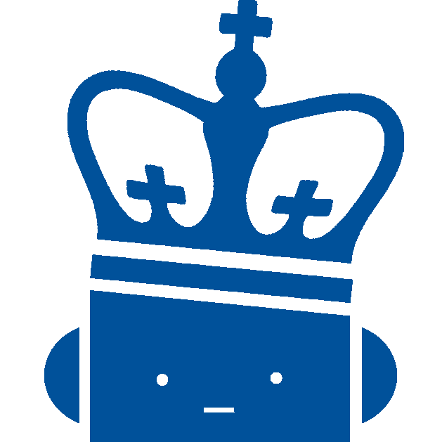
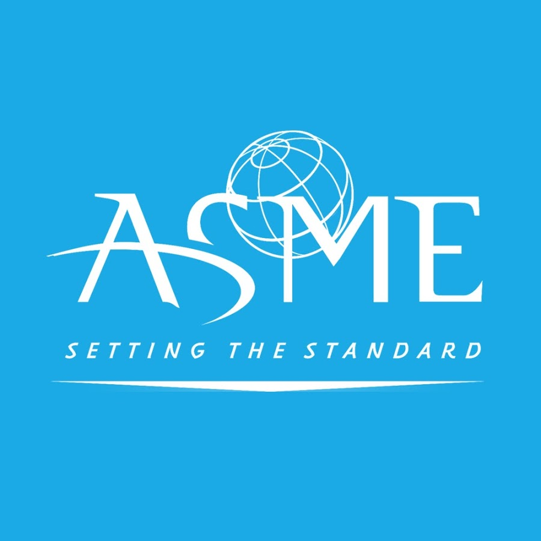
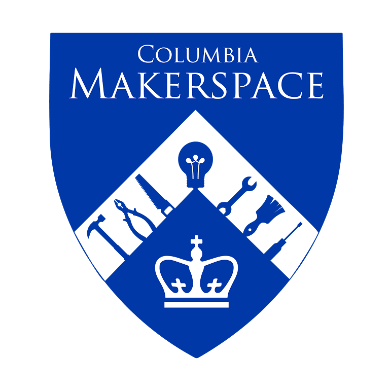
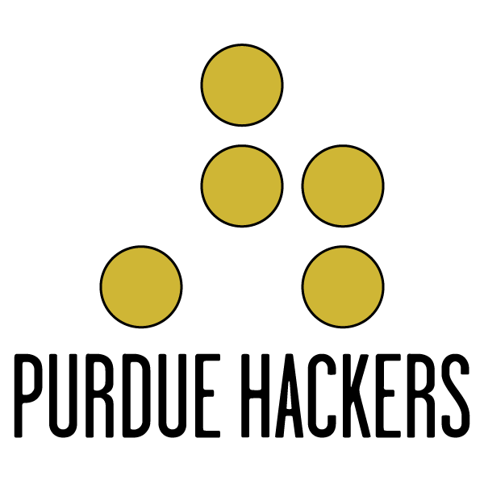
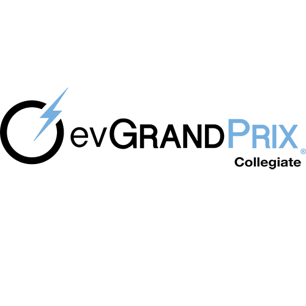
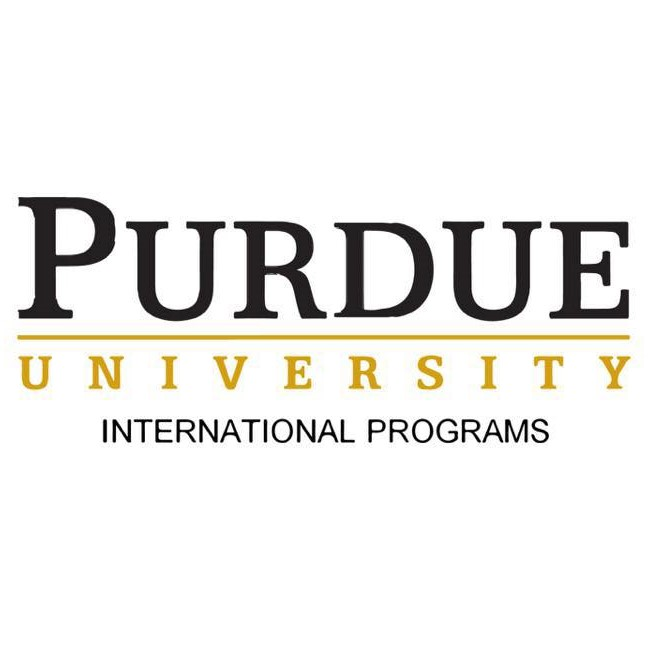
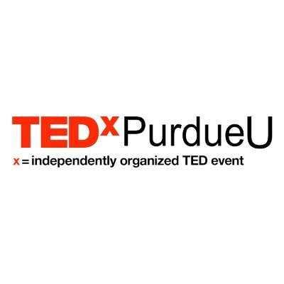
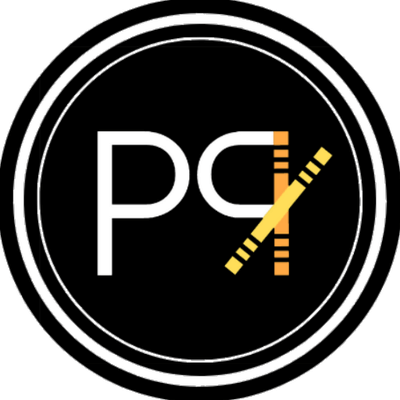

Organizations and Teamwork
Some organizations I was involved with are listed below:

Columbia Robotics Club
Software Team
Sep 2020 – Present
• Simulated robot motion and control in an underwater environment on ROS gazebo using lift-drag plugin.
• Created a virtual model of the rover and optimized design using SolidWorks.
• Worked closely with Mechanical team to make improvements to MATE ROV servicability, propeller layout, manipulator durability and chassis boyancy.

American Society of Mechanical Engineers (ASME)
Metropolitan Section
Feb 2021 – Present
• Actively involved with group as an Executive Committee Member.
• Connected with members through networking events and stayed up to date with latest trends in the industry.

Makerspace @ Columbia
User
Jan 2021 - Present

Purdue Hackers
Member
Aug 2015 – May 2016
• Planned, executed and participated in hackathons.
• Coordinated workshops for app/web development.
American Society of Mechanical Engineers (ASME)
Purdue Section
Sep 2015 – May 2016
• Coordinated with faculty on applying their research to meaningful engineering projects.
• Partook in monthly meetings and contributed to the growth of the section.

Purdue Electric Vehicle Grand Prix
Suspension Team
Aug 2013 – Jun 2014
• Analyzed the vehicle dynamics, compared loading metrics (cornering lateral forces and slip angles) to benchmark data.
• Modeled the kinematics of the suspension geometry to understand ride and handling (roll, pitch and yaw).
• Assembled two electric vehicles and finished 2nd place out of 15 teams at the Collegiate evGrand Prix hosted at the Indianapolis Motor Speedway.

Target Corporation & Periscope
Brand Ambassador Manager
Aug 2013 – Aug 2014
• Managed Brand Ambassadors for Target's 'Back-to-College' shopping event.
• Grow Target's consumer base within the collegiate community and increased brand awareness.
• Drive digital engagement with the brand through authentic social media content.

Purdue International Programs
Team Leader
Jan 2014 – May 2015
• Mentored student leaders and facilitated team building activities to grow leadership abilities in students.
• Utilized skills gained through a year-long leadership training program to execute activities and events as part of an orientation program.
• Applied learnings from previous years to reorganize the Multinational Integration Xchange (MIX) orientation program.

TEDxPurdueU
Volunteer
Sep 2012 – May 2013
• Event planning and management.

Purdue Raas
Dancer
Aug 2012 – May 2013